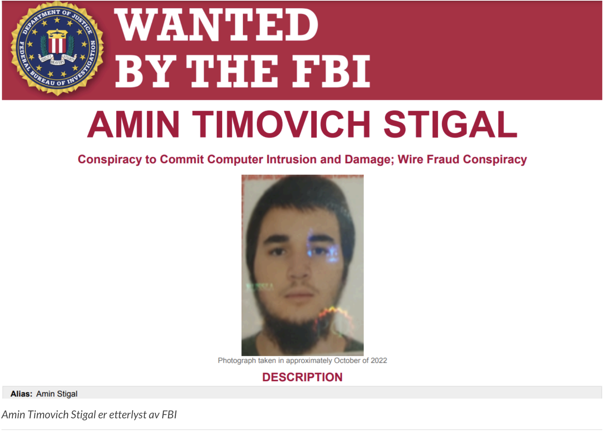

Whispergate malware og cyberangrep
Gruppen ble for alvor kjent i 2022 da de distribuerte Whispergate. Dette er et virus som sletter data. Det ble sendt ut til ukrainske organisasjoner. Angrepene var en del av en bredere kampanje rettet mot å destabilisere Ukraina og forstyrre innsatsen til NATO og allierte nasjoner for å støtte landet.
Whispergate viste virkelige fram hva de russiske hackerne kunne klare, og markerte et skifte fra cyberspionasje til direkte ødeleggelse av data. Angrepene med Whispergate-malwaret begynte 13. januar 2022. Dets hensikt var å forstyrre Ukrainas forsvar og kritiske tjenester.
Sammenslutningen for felles cybersikkerhet understreker at enhet 29155 er forskjellig fra andre kjente GRU-tilknyttede enheter, som enhet GTsSS (26165) og Sandworm (74455), som var ansvarlig for tidligere hackerangrep i Europa og USA. GTsSS (26165) stod for eksempel bak hackingen av det norske Stortinget i august 2020. Her ble e-poster, kontonumre, bankinformasjon, personnumre og andre personopplysninger fra ansatte og stortingspolitikere stjålet.
29155-gruppen har siden tidlig 2022 rettet fokus mot å forstyrre hjelpearbeidet for Ukraina. Enhet 29155 har utvidet sitt cyberverktøysett til å inkludere metoder som blander spionasje med ødeleggelse. Sammenslutningen for felles cybersikkerhet understreker at hackerne forbedrer sine tekniske ferdigheter og bygger sin erfaring ved å utføre mer avanserte cyberoperasjoner på tvers av ulike globale regioner.
I følge amerikansk etteretning har enhet 29155 vært ansvarlig for et bredt spekter av angrep på tvers av kontinenter som har påvirket NATO-land, sammen med andre i Nord-Amerika, Europa, Sentral-Asia og Latin-Amerika. Taktikken til enhet 29155 har vært å ødelegge nettsider eller kamuflere nettsider med skadelig programvare. De har også lekket stjålne data offentlig og skannet infrastruktur for å avdekke sårbarheter.
Hackerangrepene fra 29155 har ikke vært begrenset til Ukraina, men har foregått over flere sektorer. Offentlige tjenester, energi og finansinstitusjoner har særlig blitt rammet av hackergruppen. Som et resultat av aktiviteten til 29155, så har kritisk infrastruktur på tvers av NATO sine medlemsland stått ovenfor økende risiko for å bli kompromittert.
Federal Bureau of Investigation (FBI) har fulgt aktivitetene til enhet 29155 nøye. FBI skal ha oppdaget 14 000 domeneskanningsforsøk rettet mot minst 26 NATO-land og flere nasjoner i EU. Skanningene skal ha blitt gjort for å identifisere svakheter i kritiske systemer. Dersom svakheter ble funnet, så skulle det utnyttes i fremtidige angrep fra enhet 29155.
USA tilbyr belønninger for identifikasjon eller pågripelse
USA har sett seg lei av de stadige angrepene som kommer fra enhet 29155. Som et svar på angrepene fra gruppen, så har derfor amerikanerne utlyst belønning på opptil 10 millioner dollar for informasjon som fører til identifikasjon eller pågripelse av fem russiske militære etterretningsoffiserer. Disse fem personene antas å være en del av enhet 29155, som igjen tilhører GRU.
De 5 personene som antas å være en del av GRUs enhet 29155 er:

Disse fem offiserene er anklaget for å ha utført cyberoperasjoner som har skadet kritisk amerikansk infrastruktur, med særlig vekt på energi-, regjerings- og romfartssektorene. Cyberaktivitetene til enhet 29155 er også knyttet til sabotasje av vestlige lands innsats for å støtte Ukraina. Samt å forstyrre ulike sektorer som er kritiske for nasjonal sikkerhet.
Det er i tillegg til militæroffiserene en sivil som er på FBI sin ettersøkt-liste. Dette er Amin Timovich, som også har deltatt i Whispergate-angrepene mot Ukraina. Tiltalen og anklagene mot de fem GRU-offiserene framhever alvoret i cyberoperasjonene fra Russland. Beveger de seg i vestlige land, så kan de med stor sikkerhet risikere å bli pågrepet.
Enhet 29155 fortsetter ganske sikkert med de operasjonene de har gjort til nå, så organisasjoner anbefales å forbedre IT-sikkerhet.
Globale bekymringer og langsiktige implikasjoner
Russland invaderte Ukraina i februar 2022. Etter dette, så har cyberangrep eskalert i omfang og alvorlighetsgrad. Whispergate malware har blitt mye brukt, men også ødeleggende verktøy som HermeticWiper og løsepengevirus. Alt dette har blitt brukt for å lamme ukrainske systemer. U.S.C. Cybersecurity and Infrastructure Security Agency (CISA) og FBI advarte tidlig om at slik skadevare lett kunne spre seg utenfor Ukraina. Det ville kunne påvirke globale systemer hvis ikke cyberforsvaret var tilstrekkelig forberedt.
4. september kom nyheten om at USA beslaglegger 32 domenenavn. Disse domenene skal ha vært knyttet til russiske desinformasjonskampanjer. Dette fremhever den bredere cyber- og informasjonskrigføringen som blir ført av Russland. Disse 32 domenene var en del av et nettverk som hadde som mål å spre falsk informasjon for å påvirke det kommende presidentvalget i USA i 2024.
Cybersikkerhetsindustrien spiller en viktig rolle
Det er vanskelig for myndigheter selv å samle informasjon og avdekke alt ulike hackergrupper står bak. Derfor spiller cybersikkhetsindustrien en kritisk rolle i å identifisere og dempe trusler fra grupper som 29155. De ledende cybersikkhetsfirmaene i verden sporer kontinuerlig aktivitetene til russiske cyberaktører. Microsoft sporer eksempelvis Cadet Blizzard og Crowdstrike sporer Ember Bear.
De russiske cybergruppene har demonstrert avanserte evner innen skanning, rekognosering, og utnyttelse av sårbarheter i kritiske systemer.
Det globale samfunnet er fortsatt på høy beredskap, mens enhet 29155 fortsetter sine angrep. Å forsterke og forbedre kritisk infrastruktur har aldri vært viktigere. Ja, men kan gjerne si at det er kritisk for mange organisasjoner. Jakten på GRU-offiserene som er involvert i disse angrepene intensiveres. Selv om jakten fortsetter, så gjenstår den største utfordringen. Det går på hvordan man effektivt kan redusere og forsvare seg mot de økende cybertruslene som verden står ovenfor i dag.